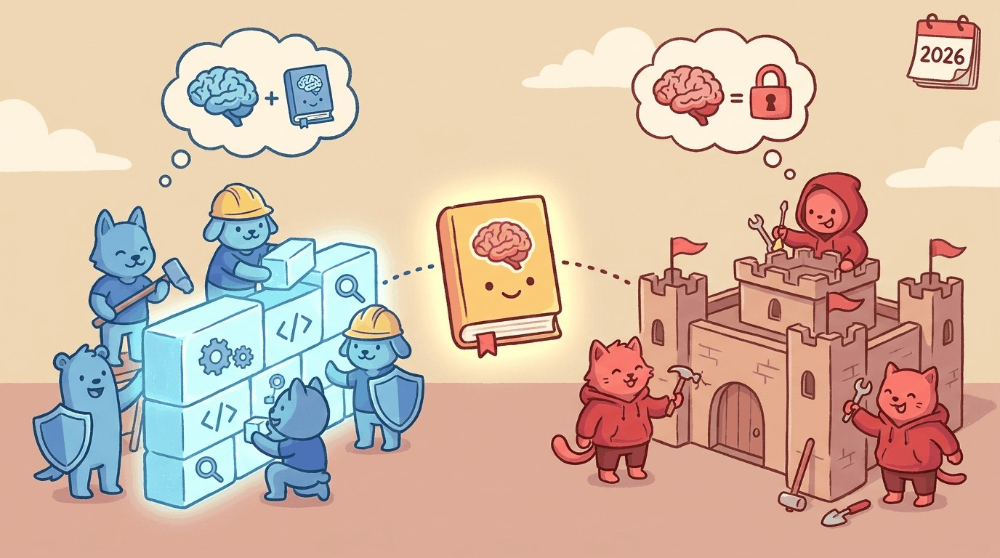

"Cybersecurity LLMs work because the haystack is finally machine-readable."
Guard, Threat-Hunting AI Agent
Chapter 70 covered education; this chapter covers cybersecurity. Threat intelligence, log analysis, automated remediation, malware reverse engineering, and the dual-use risks of an LLM that can both defend and attack.
Cybersecurity is the only LLM application area where attackers and defenders are both adopting the technology at scale simultaneously. The defender side wins at scale because of mature SIEM/SOAR infrastructure to plug into. The attacker side wins at velocity because there is no compliance team slowing them down. The 2026 cybersecurity LLM playbook is fundamentally about whether you can deploy LLM automation faster than your adversaries can. Section 71.1 covers the blue-team use cases. Section 71.2 covers the red-team uses that defenders must understand. Section 71.3 covers the LLM-specific attack surface (OWASP Top 10, MITRE ATLAS). Section 71.4 covers the trust-boundary architecture. Section 71.5 closes with the vendor landscape, and Section 71.6 is the longer production-pattern companion.
Chapter Overview
Cybersecurity LLM deployment is dual-use by definition: every blue-team capability has a red-team counterpart. This chapter walks the defensive use cases (SOC alert triage, phishing analysis, code review, postmortems, detection-as-code), the offensive use cases (phishing content, vulnerability research acceleration, malware adaptation) that defenders need to understand, the LLM-specific attack surface (OWASP Top 10, MITRE ATLAS, prompt injection, training-data poisoning, membership inference, model extraction), the trust-boundary patterns (input classification, output filtering, tool-call sandboxing, authorization), and the vendor landscape plus canonical sources.
Cybersecurity is the industry where LLMs amplify both attackers and defenders. This chapter teaches what 2026 settled about LLMs in blue-team and red-team work.
- Map the defensive (blue-team) use cases (SOC triage, phishing analysis, code review) that actually ship.
- Diagnose offensive (red-team) use cases and the defender response.
- Apply OWASP Top 10 for LLMs and MITRE ATLAS to a target deployment.
- Architect trust boundaries (input classification, output filtering, sandboxing, authorization) for a SOC workflow.
- Evaluate cybersecurity LLM vendors (Security Copilot, Charlotte AI, Tines, Wiz) against blue-team needs.
Sections in This Chapter
Prerequisites
- Adversarial security from Chapter 47
- Agent foundations from Chapter 26
- RAG fundamentals from Chapter 32
- 71.1 Defensive (Blue Team) LLM Use Cases SOC alert triage, phishing analysis, code review for vulnerabilities, postmortems, and detection-as-code generation.
- 71.2 Offensive (Red Team) Use Cases Phishing content generation, vulnerability research acceleration, malware adaptation, and what defenders need to understand.
- 71.3 LLM-Specific Attack Surface OWASP Top 10, MITRE ATLAS, prompt injection, training-data poisoning, membership inference, model extraction.
- 71.4 Trust Boundaries for LLM Systems Input classification, output filtering, tool-call sandboxing, authorization, and the SOC-workflow auto-act safety table.
- 71.5 Cybersecurity LLM Vendors and Further Reading Security Copilot, Charlotte AI, Tines, Wiz, OWASP, MITRE ATLAS, NIST.
What Comes Next
Cybersecurity established the trust-boundary pattern that Chapter 72 on government extends to a setting where the auditability and accountability requirements are imposed by administrative law rather than by an examination regime.